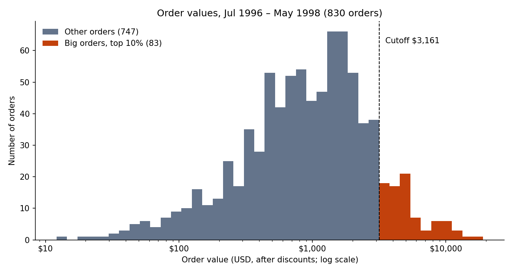
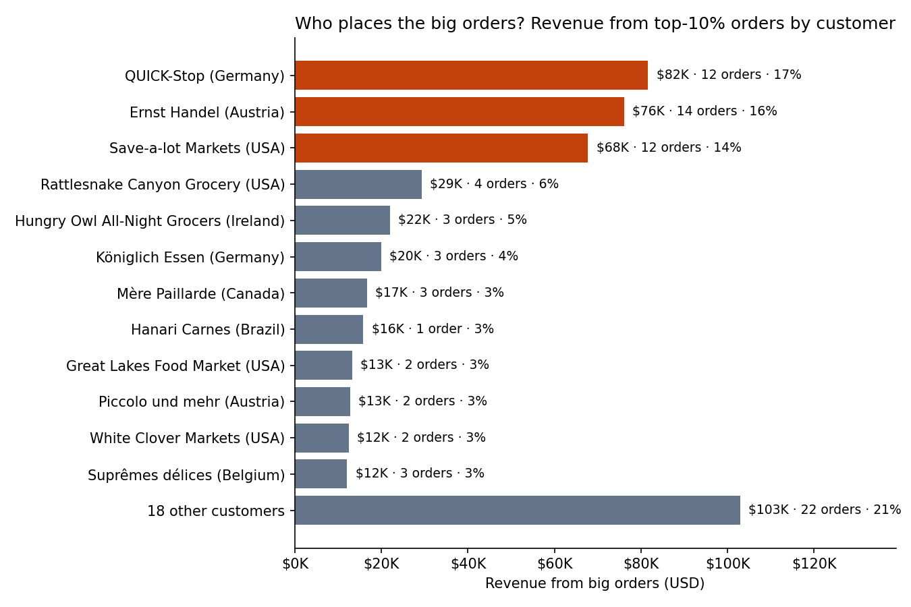
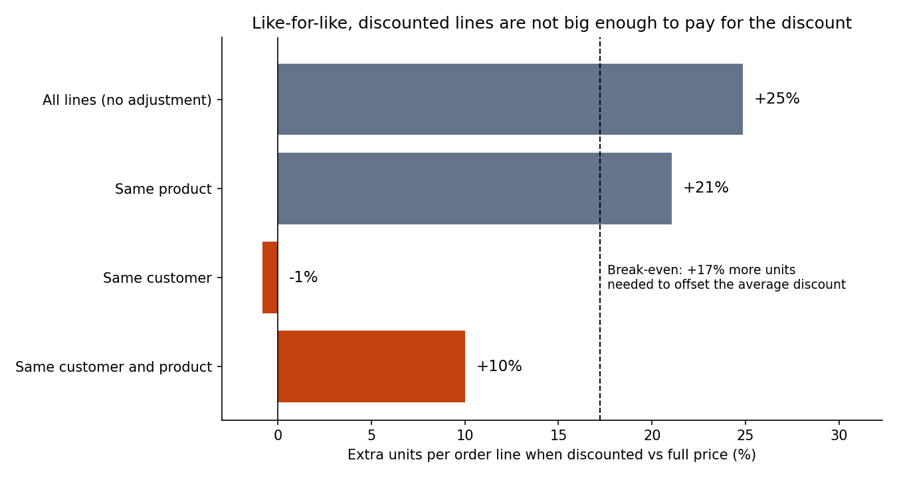
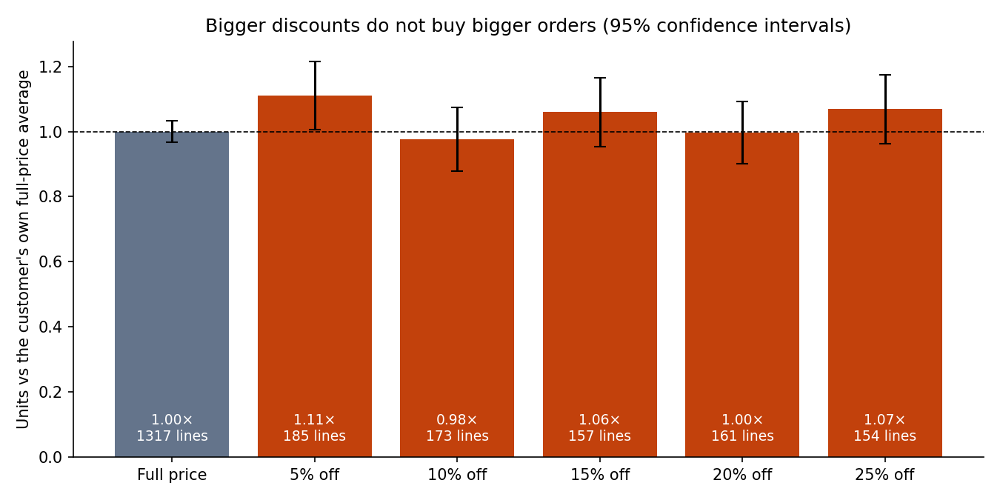
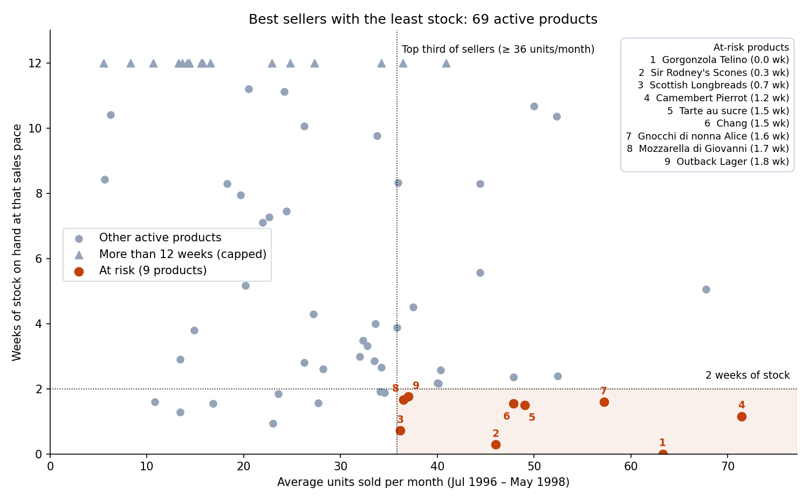
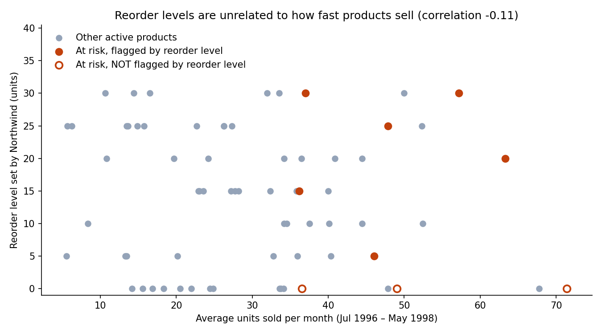

Question 1
How many big orders are there, and are they coming from one or two "whales" or spread across many customers?
Why it matters
Big orders bring in a large share of revenue. If they depend on one or two customers, losing either would hurt badly, and those accounts need protecting. If they are spread out, the risk is lower and growth can come from many places.
Approach
- Calculated the revenue of each order (sum of its lines, after discounts).
- Defined a big order as one in the top 10% by value: $3,161 or more.
- Totaled big-order revenue by customer and measured how concentrated it is.
- Repeated the analysis with four other definitions of "big" ($2,500+, $5,000+, top 5%, and a statistical outlier rule) to check the result does not depend on the cutoff.


| Definition of "big" | Cutoff | Big orders | Customers | Big three's share |
|---|---|---|---|---|
| $2,500 and up | $2,500 | 130 | 44 | 43% |
| Top 10% of orders (used) | $3,161 | 83 | 30 | 47% |
| Statistical outlier rule | $4,020 | 59 | 22 | 51% |
| Top 5% of orders | $4,707 | 42 | 16 | 52% |
| $5,000 and up | $5,000 | 31 | 14 | 50% |
The same three customers top the list under every definition.
Main finding
It is not one or two whales; it is a "big three," then a long tail.
- 83 big orders (10% of orders) bring in 38% of all revenue. 30 of 89 customers placed at least one.
- QUICK-Stop (Germany), Ernst Handel (Austria) and Save-a-lot Markets (USA) placed 38 of the 83 and earned 47% of big-order revenue. Together they are 25% of Northwind's total revenue.
- Ordering big is their normal pattern: 39–47% of each one's orders are big, compared with 10% across all orders.
- After them the drop is steep: the next customer, Rattlesnake Canyon Grocery, has 6% of big-order revenue.
Business implication
These three customers bring in a quarter of Northwind's revenue, and losing even one would cost about 8% of sales overnight. Keeping them should be a top priority: each should have a dedicated account manager, and their orders should come first when stock runs low. We want them to know how much we value them as customers. Beyond protecting these relationships, we should grow them, and study what makes these three order big so we can turn the next tier of customers into accounts like them.
Question 2
Are discounts leading to bigger orders, or should Northwind stop discounting?
Why it matters
Northwind gave away $88,666 in discounts, 6.5% of what it would have billed at full price. Discounts on 838 of 2,155 order lines (39%) are only worth it if they make customers buy enough extra to make up the lost revenue.
Approach
- Compared the quantity on discounted order lines with full-price lines.
- A simple comparison is misleading, because discounts go mostly to customers who already buy in bulk. So the comparison was repeated within the same customer, and within the same customer buying the same product.
- Calculated the break-even: the average discount on a discounted line is 14.7%, so it needs 17.2% more units just to bring in the same revenue as a full-price line.
- Checked whether bigger discounts (5% to 25%) buy bigger quantities.


Main finding
Discounts are not leading to bigger orders, at least not enough to pay for themselves.
- Overall, discounted lines are 25% bigger. But when the same customer gets a discount, they buy about the same as usual (−1%).
- Even in the strictest comparison (same customer, same product) the lift is +10%, short of the +17% break-even, and only 98 of 195 such pairs went up at all.
- Discount size makes no clear difference: quantities at 10%, 15%, 20% and 25% off are all within the margin of error of full price.
- Discounts are concentrated: 35 of 89 customers never got one, while the big three got discounts on 49% of their lines (37% for everyone else).
Limits: this is historical data, not an experiment, so it cannot show whether some customers would have left without discounts. There is no cost data, so the analysis covers revenue, not profit.
Business implication
Discounts cost Northwind $88.7K, yet customers who get them buy about the same as they do at full price, so most of that money is simply given away. The manager should test removing routine discounts for a group of customers and track whether their orders drop. In their place, Northwind should offer discounts only on bulk orders above roughly $3,000, the size of its top 10% of orders, so customers earn the discount by ordering more.
Question 3
Which products sell a lot but have low inventory, so we must make sure they stay in stock?
Why it matters
Running out of a best seller loses sales immediately and can push customers to other suppliers, including the big accounts from Question 1. Stock is thin across the catalog: the typical active product has about 4.5 weeks of sales on hand.
Approach
- Measured each active product's sales pace as average units sold per month over the full 22 months.
- Converted current stock into weeks of stock at that pace (units in stock ÷ weekly sales).
- Flagged products in the top third by sales (36+ units a month) with under 2 weeks of stock. Discontinued products were excluded, since they cannot be restocked.
- Compared the list with Northwind's own reorder levels, the stock level at which a product is supposed to be reordered.

| # | Product | Category | Sold / month | In stock | Weeks left | On order | Reorder alert? |
|---|---|---|---|---|---|---|---|
| 1 | Gorgonzola Telino | Dairy | 63 | 0 | 0.0 | 70 | Yes |
| 2 | Sir Rodney's Scones | Confections | 46 | 3 | 0.3 | 40 | Yes |
| 3 | Scottish Longbreads | Confections | 36 | 6 | 0.7 | 10 | Yes |
| 4 | Camembert Pierrot | Dairy | 71 | 19 | 1.2 | 0 | No |
| 5 | Tarte au sucre | Confections | 49 | 17 | 1.5 | 0 | No |
| 6 | Chang | Beverages | 48 | 17 | 1.5 | 40 | Yes |
| 7 | Gnocchi di nonna Alice | Grains/Cereals | 57 | 21 | 1.6 | 10 | Yes |
| 8 | Mozzarella di Giovanni | Dairy | 37 | 14 | 1.7 | 0 | No |
| 9 | Outback Lager | Beverages | 37 | 15 | 1.8 | 10 | Yes |
Highlighted rows have nothing on order and no reorder alert set (reorder level 0).

Main finding
Nine best sellers have under two weeks of stock, and three of them have no safety net.
- Six of the nine are already flagged by their reorder level and have stock on order (Gorgonzola Telino is sold out, with 70 units coming).
- Camembert Pierrot, the top seller of the whole period, Tarte au sucre and Mozzarella di Giovanni have about 1–2 weeks left, nothing on order, and a reorder level of 0, so Northwind's system will not warn about them until they are sold out.
- The bigger problem is the reorder system itself: reorder levels are unrelated to sales pace, and six slow sellers are flagged while these fast sellers are not.
- Dairy and confections account for six of the nine.
Check: using only the last six months' sales pace flags 14 products, 8 of them on this list. The long-run average is steadier but slower to notice products whose sales have recently jumped, such as Konbu (about one week of stock at its recent pace). The stock snapshot is undated and is treated as the position at the end of the order data. Some discontinued products are still in demand (Guaraná Fantástica: 51 units a month).
Business implication
Camembert Pierrot, Tarte au sucre and Mozzarella di Giovanni should be reordered immediately: they are among Northwind's best sellers, have less than two weeks of stock, and nothing on order. But these three are a symptom of a bigger problem. Northwind's reorder alerts have no connection to how fast products sell, which is why nine best sellers are close to running out. Fixing this one product at a time is not enough; Northwind needs an inventory optimization model that uses sales speed, supplier delivery times and storage costs to keep the right amount of every product in stock at all times.